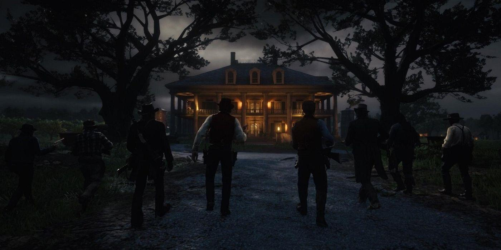

小的时候，第一次迷恋上游戏开始，有个问题就时不时叩问着我：十几年甚至几十年后我还会像现在这样热爱游戏吗？
应该没法抗拒游戏的魅力，游戏大概会伴随我一生吧？
神秘感，期待感，成就感。这是游戏的魅力么？
小时候对于游戏的热爱，目的很明确，就是冲着那在一次次过关升级之后的从心理层面给予自己的褒奖。游戏本身也没有让玩家失望过，给涉世未深的玩家提供了一个缩略版的真实世界，这个世界足够丰富，足够庞大。未知事物的吸引，顶级道具的眷顾，以及肉眼可见的成长。
长大之后对于游戏的情感逐渐不再那么单纯，玩游戏不免开始变得“功利”，竟然也开始想方设法探寻游戏的意义，毕竟人类是这个星球上唯一会探寻事物意义的生物。
我应该已经在探索游戏意义这条路上走上了歧途。偶尔打开一款游戏，被吸引，在排位赛里面磨炼，然后看着自己在朋友里面的排名迅速上升，不得不说我确实挺擅长的，而且这种滋味在那一刻是很美妙的。但是往往恰好在这个时候，我竟奇怪地开始审视起了自己的所作所为。我为什么要玩这个游戏？每次从零开始一把游戏，结束后又从零开始另一把游戏，是不是在浪费生命？排名能给我什么？有什么价值？？上一秒我还沉浸在沾沾自喜中，下一秒如同被人拿盆子从头到脚浇了一身的水。如梦初醒。
改变也是发生在一瞬间，游戏被我抛弃得非常干脆，非常果断，不带有一丝留恋，不带走一片云彩。哪怕再打一局就能晋级王者，再来一次签到就能获取限定皮肤。已有的存量竟勾不起我心中的一丝涟漪。原先由多巴胺占据已久的阵地突然被内啡肽占领了。
游戏没有了成就感。
或许在某一天，在朋友的怂恿下，又重拾了某一款游戏，但是可以预见的是，这只是又一次畅快、怀疑、避之唯恐不及的死循环。
游戏之于我好比“世界”之于楚门，在恍然意识到了虚无之后，即使之前的那个世界再怎么美好也会千方百计想要逃离。即便是推崇自由度的游戏，也不过是设计者给玩家打造的乌托邦，世界永远是按照既定的轨迹运转的。从迈进这个世界的那一刻起，作为玩家在里面的所有成长路径都是可预见的。
游戏没有了神秘感。
有人说游戏是学习，有价值的学习一定是痛苦的，没有对于成功的渴望是难以持续的。诚然游戏的使命是确保玩家处于认知舒适区，奇怪的是即便是像魂类游戏这种刻意营造陡峭的攀登曲线，很难让人说得上舒适的游戏，似乎也能够让玩家乐在其中，如痴如醉。
我难以用“游戏是学习”这个命题来说服我自己。
不管设计者的初衷是什么，游戏于我而言似乎已经全部成为了快餐式的消费，我迫切地想要知道一款游戏有什么卖点，为什么火，作者想要表达什么。很久没有放下包袱去从容体验作者给玩家营造的这个框架本身了。
尽管已经越来越吝啬自己在游戏上面的时间投入，但依旧保持着对于游戏的敏感度。以至于每一个在剪辑片段中流过的画面，每一段夹杂在混剪配乐中的主题曲，都能把我拉回到那一个个难以忘怀的世界。奎托斯带着儿子在巨人山顶抛洒妻子的骨灰，范德林德帮众救杰克的那个夜晚，拉塔恩在腐败之地守护着自己的马……
或许游戏的期待感还在，根植于每一个游戏玩家内心的那份浪漫主义和理想主义，也埋藏于那每一个人物和故事中。
游戏的阴影会伴随我一生吧？
或许不论游戏在未来会发展到哪一步，我一遍遍经历着怎样的死循环，我依旧会在片刻中找回小时候玩游戏的初心，对游戏最朴素的热爱。